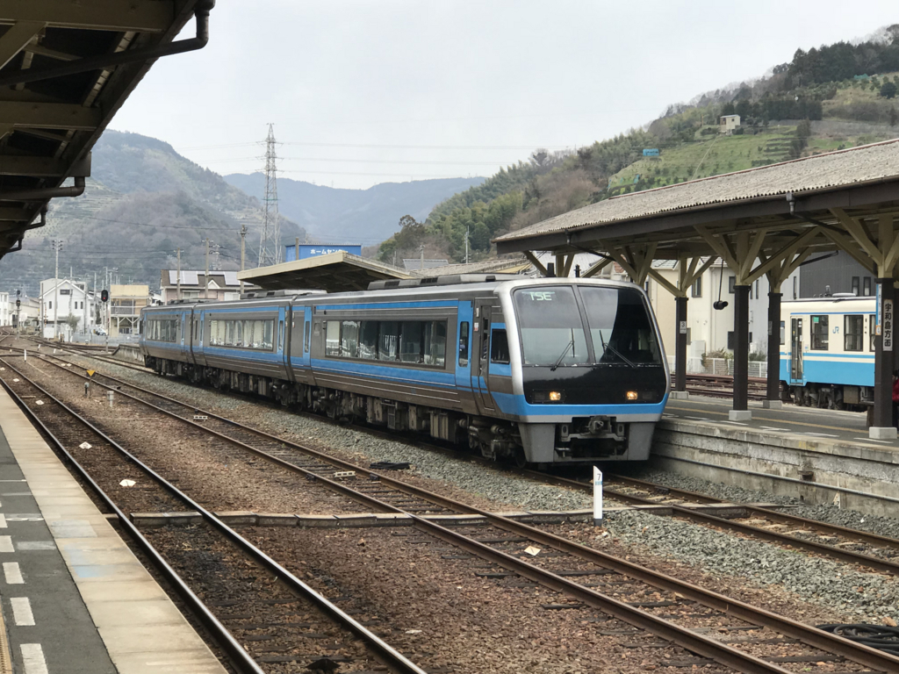
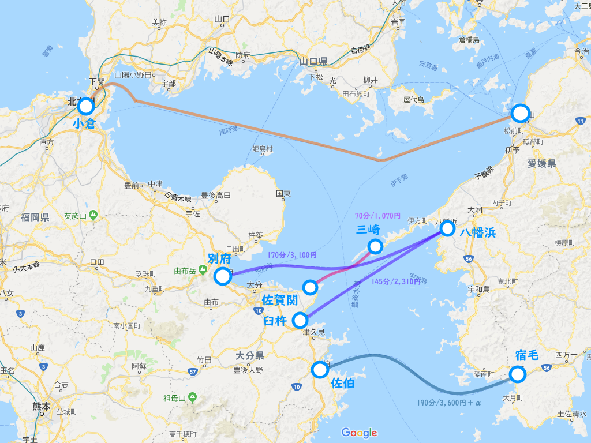
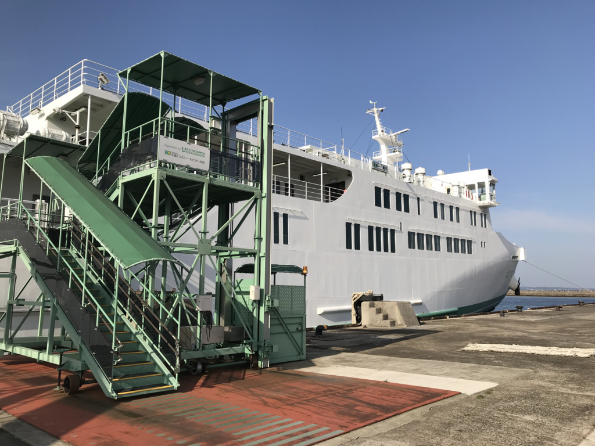
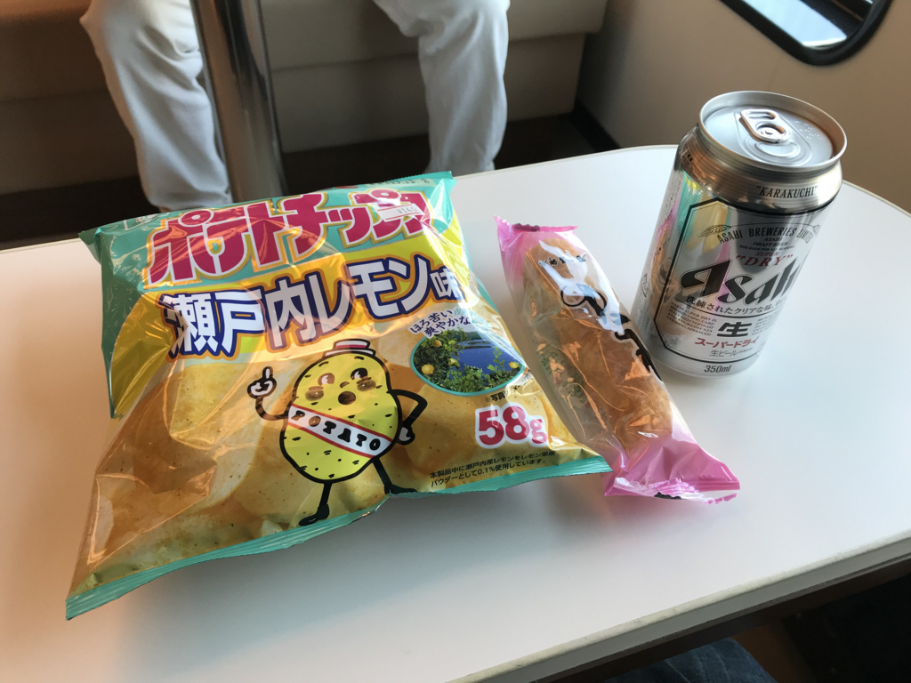

日記：フェリーで松山 → 別府
公開日：

金曜日は仕事を休んで別府の鉄輪温泉へ行ってきました。「てつりん」じゃなくて「かんなわ」なんだな。

愛媛から大分へ渡るには、3つルートがあります。ざっくりまとめるとこんな感じ（運賃は基本的に旅客のみ、最下等級）。
- 三崎 → 佐賀関（70分/1,070円）：1時間おきに出ている海上国道（国道197号線）。三崎港はクルマ・バイクでしか行けないので（松山からのバスもあるみたいだけど）、基本的に車両で利用することになると思います。
- 八幡浜 → 別府（170分/3,100円）：宇和島運輸フェリーが1日6便（だいたい3～4時間間隔、深夜便もあり）運航。JR 八幡浜駅から八幡浜港までバス or タクシーで乗り継げる。往復で買うと復路が1割引き。クレジットカードは利用不可
- 八幡浜 → 臼杵（145分/2,310円）：宇和島運輸フェリーと九四フェリーが運航。併せて1日14便（宇7便＋九7便！）なので、一番捕まえやすい。臼杵港から駅、大分・別府までは割とあるので、温泉に入りたいだけなら別府行きがよいはず。
今回は 八幡浜 → 別府 ルートを使いました。

お世話になったあかつき丸は、去年？就航したばかりの新造船！ Wi-Fi はもちろん、充電設備も充実していて、結構便利です。

前回使った 八幡浜 → 臼杵 の飯が正直あんまりおいしくなかったので売店でビールとお菓子を準備したのですが（ちなみにポテチ瀬戸内レモン味はいかにも「作った」味でイマイチ）、新造船だと知っていたらなかで食べるのもありだった。まぁ、どうせレトルトものだろうけど。
11時台の宇和海に乗って、鉄輪温泉の旅館に着いたのは4時半でした。松山からの所要時間は5、6時間みておけばいいみたいですね。想像した以上に遠かった……。かかったお金は――調べるのが面倒なので記憶ベースで適当に計算すると――7,000円ぐらい。
- 松山駅 → 八幡浜駅：特急宇和海で1時間弱、運賃は2,500円ぐらい。
- 八幡浜駅 → 八幡浜港：タクシーで1,000円ちょっと。バスもあるし、歩いても……どれぐらいだろう、30分ちょいぐらいで行けるんじゃないかな？
- 八幡浜港 → 別府港：3,100円
- 別府港 → 鉄輪温泉：バスは400円弱。西回りと東回りがあるのかな？ 結構時間かかる（30分弱）。初見ではわかりにくかった。タクシーは1,500円ぐらいでものの10分で着く。2人以上ならタクシーを選ばない理由はないと思った。
船旅は、2時間程度なら楽しいけど、それ以上はちょっと退屈な感じですねー。旅館もろもろはまた次の機会に。